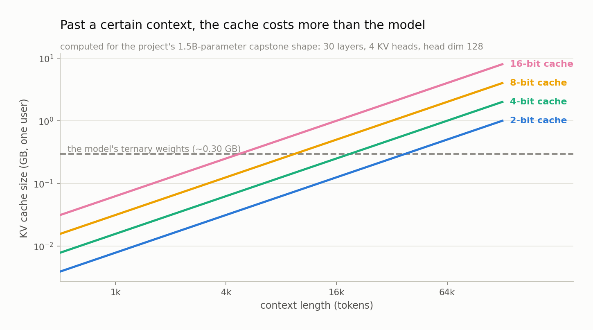

Chapter 8 — The KV Cache#
After this chapter you will know what the KV cache is, why it exists, and how to compute its size from a model's shape. You will be able to look at a deployment and say how many bytes go to weights and how many go to cache, and you will see why any memory budget that counts only weights is wrong the moment a real user types a long prompt. You will also see what LOGOS plans to measure about cache precision, and what it honestly cannot measure at the scale it runs at.
What attention needs from the past#
A quick recap, only as much as this chapter needs. A transformer processes a sequence of tokens, and at each position it runs attention: a mechanism that lets the position look back at every earlier position and pull in information from the ones that seem relevant.
Three vectors are computed at every position, each by multiplying that position's hidden state by a learned matrix. The query says what this position is looking for. The key says what a position has to offer. The value carries the content that gets passed along if the position is selected. To attend, position 500 compares its query against the keys of positions 1 through 500, turns those comparisons into weights, and takes a weighted average of the corresponding values.
The important structural fact is that positions 1 through 499 contribute their keys and values, and nothing else. Their queries are irrelevant to position 500. Once a position has been processed, its key and its value are the only things about it that the future ever needs.
Why we cache#
Now think about generating text. The model emits one token at a time, and each new token becomes part of the context for the next one. To produce token 501 it needs keys and values for positions 1 through 500. To produce token 502 it needs keys and values for positions 1 through 501, which is the same set plus one.
Recomputing all 500 from scratch, then all 501, then all 502, is enormous waste. Those keys and values do not change. The key at position 7 was computed from the hidden state at position 7, which was fixed the moment token 7 was decided, and nothing that happens later touches it.
So you keep them. The KV cache is exactly that: the stored keys and values for every position processed so far, held in memory for the whole duration of a generation so each new token costs one small computation instead of a full re-run of the history. It is the single optimization that makes autoregressive generation practical, and it converts a compute problem into a memory problem.
The formula, term by term#
The project computes this in one line, ModelConfig.kv_bytes in src/logos/config.py:
KV_bytes = 2 × layers × kv_heads × head_dim × context_length × (bits / 8) × batchEach factor earns its place.
The 2 is keys and values. Two tensors per position, identical in shape, so everything doubles.
layers is the number of transformer blocks. Attention happens independently in every block, with its own projections, so every block keeps its own cache. Thirty layers means thirty separate caches.
kv_heads × head_dim is the width of one position's key vector. Attention is split into heads, parallel copies that each attend over a slice of the representation, and head_dim is the size of each slice. Multiply and you get the number of numbers per position per layer, per tensor.
context_length is how many positions are in the cache, which is the length of the conversation so far. This factor is linear and it is the one that hurts. Doubling the context doubles the bytes, exactly, with no economies of scale anywhere. A model does not get more efficient at remembering as it remembers more.
bits / 8 converts to bytes. Sixteen-bit keys and values cost 2 bytes per number; 4-bit costs half a byte. Nothing in the formula forces the cache to have the same precision as the weights, which is the opening this chapter is really about.
batch is the number of sequences being processed at once. In a served deployment that means concurrent users, and this is the factor people forget. Weights are shared: ten users hitting one model instance read the same weight bytes. Caches are not. Every user has their own conversation and therefore their own private cache, so cache memory scales with traffic while weight memory does not.
A real shape, with real numbers#
Take the largest shape in the LOGOS ladder, the 1.5B-parameter design in config.py. It has d_model 2048, 30 layers, 16 query heads, 4 key/value heads, and head_dim 128. Worth stating plainly: this is a shape the project prices, not a model it trains. The local program fits its law between 3M and 60M parameters with paid anchors at 125M. The 1.5B entry exists so that budget arithmetic can be done for a deployment-scale artifact.
Start with the cost of a single token, at 16-bit:
2 × 30 layers × 4 kv_heads × 128 head_dim × 2 bytes = 61,440 bytesAbout 61 KB of cache per token of context. Now fill an 8,192-token context, which is a modest prompt by 2026 standards, roughly a long document or a medium-length conversation:
61,440 × 8,192 = 503,316,480 bytes ≈ 503 MBHalf a gigabyte, for one user, holding one conversation.
Set that against the weights. At 1.5 billion non-embedding parameters packed at 2 bits each, the ternary body is about 377 MB. Call the weights roughly 400 MB in round terms. The cache is larger than the model.
That is the sentence to sit with. Every gain from Chapters 6 and 7, the whole project of shrinking weights from 16 bits to under 2, has been more than eaten by a single 8k context that nobody thought to count.
Cache precision is the obvious lever, and it works, because the formula is linear in bits:
| Cache precision | Bytes at 8,192 tokens | Relative to weights (~400 MB) |
|---|---|---|
| 16-bit | 503 MB | 1.26× |
| 8-bit | 252 MB | 0.63× |
| 4-bit | 126 MB | 0.31× |
| 3-bit | 94 MB | 0.24× |
| 2-bit | 63 MB | 0.16× |
Going from 16-bit to 4-bit cache takes 503 MB down to about 126 MB and turns the cache from the dominant term into a modest one. Whether the model still works well at 4-bit cache is a separate question, and it is precisely the question LOGOS intends to measure.


Grouped-query attention: compression built into the architecture#
Look again at the formula and notice something. It contains kv_heads, not n_heads. In the 1.5B shape those numbers differ: 16 query heads, 4 key/value heads.
That is grouped-query attention, or GQA. Instead of every query head having its own private key and value head, several query heads share one. LOGOS uses a 4:1 ratio everywhere in its ladder, enforced by an assertion in ModelConfig: four query heads per key/value head. Each group of four query heads reads the same cached keys and values, and attends to them with different queries.
The saving goes straight into the cache. Without GQA the 1.5B shape would need 16 key/value heads, which is four times the numbers per token: 245,760 bytes instead of 61,440, and 2.01 GB instead of 503 MB at 8k context. GQA is not a rounding trick or a storage format. It is a decision about the model's architecture that reduces cache bytes by construction, made before training, and it costs some expressiveness because four query heads now have to share one view of the past.
Which makes GQA and cache quantization two routes to the same destination. One changes what the model is, the other changes how its state is stored, and both are ultimately spending the same currency: bytes. LOGOS's plan is to price them in that shared currency, with a GQA-ratio arm at 8:1 alongside the cache-precision arms, so that "sixteen query heads sharing two key/value heads" and "four-bit cache" can be compared as what they are, two ways of buying the same reduction.
Why this changes the research question#
Here is the consequence for everything that follows.
A memory budget that counts only weights is not a conservative approximation. It is the wrong budget. As soon as you commit to serving a particular context length, a fixed and often dominant slice of your bytes is spoken for before a single weight is loaded, and the slice grows with every concurrent user.
That changes the optimization. If you are choosing between a bigger model at lower weight precision and a smaller one at higher precision, the answer depends on how many bytes are still available after the cache has taken its cut. Push the context to 16k and the cache takes a bigger cut, leaving less for weights and shifting the optimum toward fewer parameters, or toward a cheaper cache, or both. The two decisions are coupled through a shared budget, and you cannot optimize either one in isolation.
This is why the project's prescription code carries a total_footprint_optimal function alongside the weights-only one: it searches over weight precision and cache precision jointly, subject to weight_bytes + kv_bytes ≤ budget. It is also honest in its own docstring about a current limitation. The fitted quality law does not yet depend on cache precision, so today the search simply picks the cheapest cache that buys the most parameters. Making cache precision affect predicted quality requires training runs that do not exist yet.
What LOGOS will measure here, and what it will not#
The KV phase of the program has two halves and, as of this writing, no results. Being clear about that matters more than it might seem, because a plan described in the present tense reads exactly like a finding.
The cheap half is post-hoc KV quantization: take checkpoints that already exist at 12M, 25M, and 60M parameters, round their caches to 8, 4, 3, and 2 bits at evaluation time, and measure what breaks. No training required, which is why it covers the full precision sweep.
The expensive half is native KV-QAT: a small number of runs at 12M parameters where the cache is quantized during training, so the model learns with a coarse cache the same way the weight arms learn with coarse weights. The machinery exists — KVQuant in transformer.py applies per-head absmax integer fake-quant to keys and values, with the same STE from Chapter 7 — and the arms are specified in the manifests. They have not been run. The plan calls for four of them, at 8-bit and 4-bit cache, crossed with ternary and bf16 weights.
The honest limitation is scale. The tasks that would actually demonstrate long-context capability, the needle-in-a-haystack retrieval benchmarks and their relatives, do not produce meaningful signal from a 12M-parameter model. A model that small cannot reliably do the task at full precision, so measuring how much cache quantization degrades it is measuring noise. This phase will therefore report what it can measure: cache-induced increases in bits-per-byte, and perplexity at long context. Not task scores. Those need models an order of magnitude larger than this program trains, and claiming them from 12M would be exactly the sort of over-reach the rest of the project is built to avoid.
What to remember#
The KV cache stores the keys and values of every processed position so that generating each new token does not require recomputing the entire history, and its size is given exactly by 2 × layers × kv_heads × head_dim × context × bits/8 × batch. It is linear in context length with no economies of scale, and unlike weights it is private to each concurrent user, so it scales with traffic. For the project's 1.5B shape at 8,192 tokens it comes to about 503 MB at 16-bit against roughly 400 MB of ternary weights, meaning the cache is the larger term, and dropping the cache to 4-bit brings it to about 126 MB. Grouped-query attention at the project's 4:1 ratio already removes a factor of four from that bill by construction, which makes architecture and cache precision two ways of buying the same bytes and argues for pricing them together. The practical consequence is that a memory budget counting only weights is wrong for any real deployment, and the phase that will measure cache precision properly is specified but has not produced results.